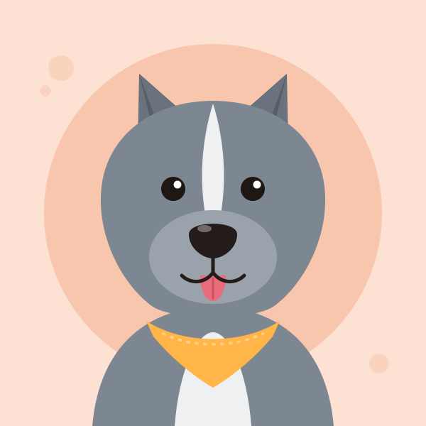
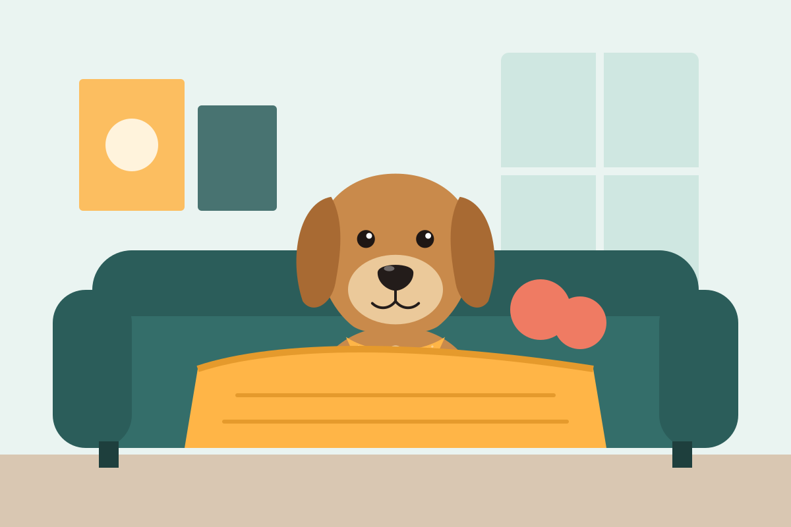
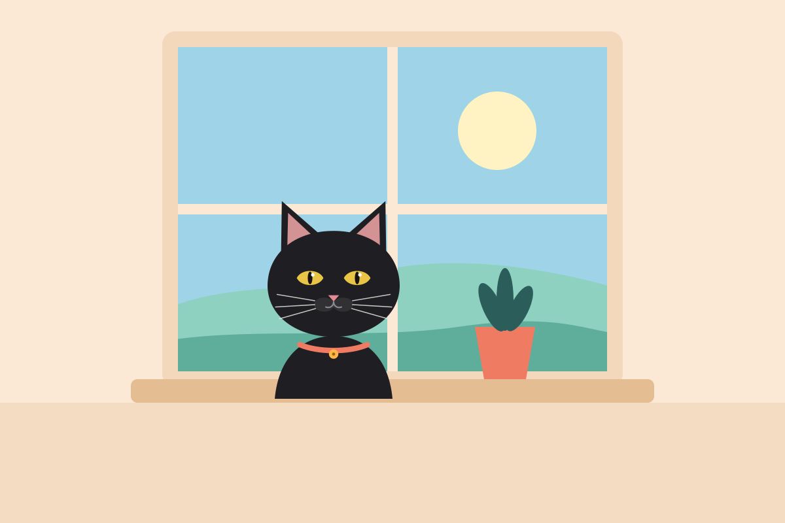
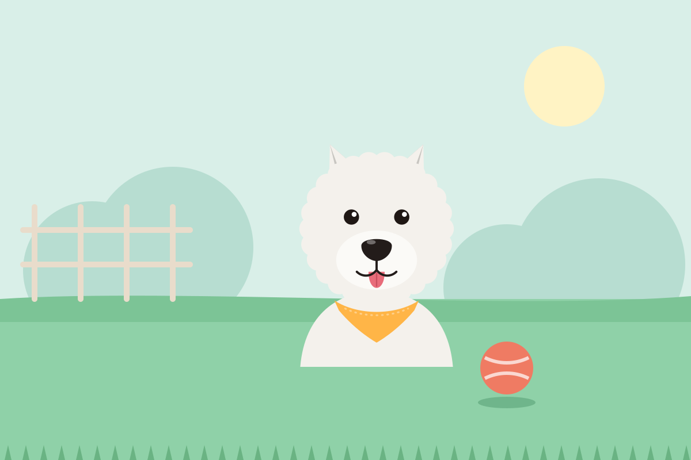

Qué necesitas
- Ser mayor de edad con identificación oficial
- Comprobante de domicilio
- Que toda la familia esté de acuerdo
- Si rentas, permiso por escrito del arrendador
Rescatamos, curamos y esterilizamos perros y gatos en Tlaquepaque desde 2015. Cada uno se entrega vacunado, desparasitado y con microchip, y te acompañamos durante los primeros cuatro meses.
Hoy esperan familia 14 rescatados: 8 perros y 6 gatos.
Filtra por lo que tu casa necesita. Los que llevan más tiempo en el refugio aparecen primero: nadie debería acostumbrarse a esperar. Voltea cada tarjeta para leer su historia.
Mostrando a los 14
Nadie coincide con esos filtros. Prueba quitando alguno: muchos se adaptan mejor de lo que dice su ficha.
Cinco preguntas, una a la vez. Comparamos tus respuestas con lo que sabemos de cada rescatado y te mostramos a los tres más compatibles.
El proceso toma entre una y dos semanas. No es para ponerte trabas: es para que nadie regrese al refugio. Baja y sigue las huellas.
En línea, en diez minutos. Nos cuentas de tu casa y tu rutina.
Resolvemos dudas y te contamos la historia completa del rescatado.
Visita en el refugio con toda la familia y, si hay, con tu otro perro.
Se va contigo a prueba. Te llamamos al tercer y al décimo día.
Firmamos el contrato de adopción y te acompañamos durante cuatro meses.
| Cachorros y gatitos | ₡23 000 |
|---|---|
| Adultos de 1 a 7 años | ₡17 500 |
| Senior, más de 7 años | Sin cuota |
Cubre parte de la esterilización, las vacunas, el microchip y la desparasitación, y financia el siguiente rescate.
Tres pasos cortos. Puedes regresar al paso anterior sin perder lo que escribiste.
Esta página no guarda tus datos en ningún servidor: el botón de correo abre tu aplicación con la solicitud lista para enviarla.
No recibimos dinero del gobierno. Las croquetas, las cirugías y la renta del refugio salen de donativos.
Te enviamos los datos para transferir y el recibo deducible por correo.

Llegó atropellada en julio. Camina, pero necesita una prótesis para dejar de sentir dolor.
₡335 000 reunidos de ₡485 000.
Recibimos en el refugio sábados y domingos de 11:00 a 16:00.
Cuida a un cachorro o a un recién operado de dos a seis semanas. Nosotros ponemos comida y veterinario.
Quiero ser hogar temporalPaseos de fin de semana, baños, fotos para las fichas o traslados al veterinario.
Quiero ser voluntarioNos mandan fotos, nosotros las guardamos. Tres de las 87 adopciones de este año; arrastra para ver más.

Galleta pasó dos semanas debajo de la mesa. Hoy no hay forma de sacarla del sillón ni de nuestra vida.

Buscábamos un gatito y nos enamoró un gato de seis años. Es el más tranquilo de la casa y nos espera en la ventana.

Copo llegó con miedo a las manos. Ahora nos trae la pelota cada vez que alguien abre la puerta del jardín.
Nuestro refugio casi siempre está lleno, pero podemos orientarte. Esto es lo primero que conviene hacer:
Arranca una tira para copiar nuestro WhatsApp.